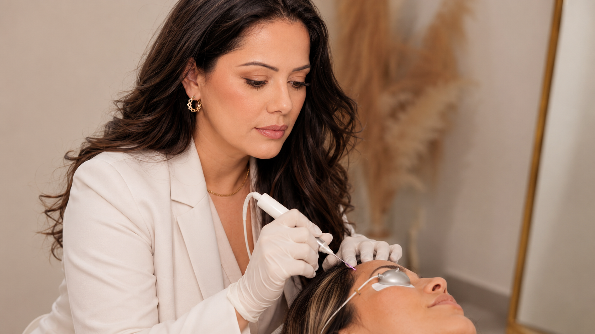

JOURNAL Renovação da pele
Barreira cutânea sensibilizada: quando perguntar se é melhor adiar
Ardor, vermelhidão e descamação são informações relevantes antes de um procedimento. Saiba o que relatar e o que perguntar sem autodiagnóstico.

01 · Uma mudança recente faz parte do histórico
 01 · Uma mudança recente faz parte do histórico
01 · Uma mudança recente faz parte do históricoConte como a pele está hoje
Ardor, coceira, vermelhidão, sensibilidade, descamação, queimadura solar, feridas ou uma mudança recente na pele são informações úteis para a equipe antes da sessão. Conte também sobre produtos novos, medicamentos e procedimentos recentes. Não é preciso descobrir a causa por conta própria nem esconder uma reação por receio de perder a data.
02 · Sintomas não confirmam um diagnóstico
Sinais parecidos podem ter causas diferentes
Sensibilidade pode ocorrer por diferentes motivos, incluindo irritação por produtos ou uma condição de pele que merece avaliação. A aparência isolada não permite distinguir essas possibilidades nem indicar um protocolo. Se os sintomas forem novos, intensos, persistentes ou estiverem piorando, procure a avaliação adequada antes de acrescentar outro procedimento.
03 · Não há um prazo único para todos os procedimentos
O momento depende do procedimento
Um procedimento que envolve esfoliação, calor ou energia pode exigir uma conversa diferente de uma limpeza superficial. O plano depende da técnica real, da condição da pele e do histórico. Fontes dermatológicas recomendam discutir condição atual, medicamentos e rotina antes de tratamentos como peelings ou laser; elas não definem um prazo universal para adiar todo procedimento. Não interrompa medicamentos nem inicie produtos por conta própria.
04 · Organize uma conversa prática
Perguntas que ajudam a decidir o próximo passo
Pergunte se a alteração muda a indicação, se é melhor avaliar ou esperar, quais produtos e cuidados devem ser evitados, quem deve ser contatado se a pele piorar e quando a decisão será revista. Se fizer sentido, consulte também a página sobre sinais de sobrecarga da barreira e converse com a equipe do serviço que você está considerando.
05 · Referências
Referências
As fontes abaixo ajudam a entender o tema em termos gerais. Elas não confirmam o aparelho, protocolo ou indicação disponível na clínica.
Contato
Pergunte sobre este tema ou outra preocupação
Envie sua dúvida com as informações que você se sente confortável em compartilhar. A resposta será enviada pelos dados informados.
Próximo passo